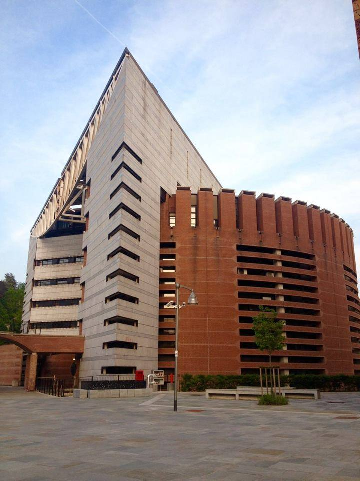

Coordinated by Prof. Marco Donatelli, our research group is based in Como, Italy, and brings together postdoctoral researchers and PhD students working on problems in numerical analysis and scientific computing. We develop mathematical models, numerical algorithms, and computational methods for challenging problems arising in areas such as inverse problems, image processing, numerical linear algebra, optimization, and scientific computing. Our research combines theoretical analysis with computational experimentation and real-world applications, fostering a collaborative environment where young researchers can develop new ideas and contribute to advances in numerical mathematics.

Theory
Advances in numerical linear algebra and matrix structures.
Algorithms
Efficient structured matrix algorithms for large-scale problems.
Applications
Modeling and simulation in applied sciences and engineering.
Address
Via Valleggio, 11
22100 - Como, Italy